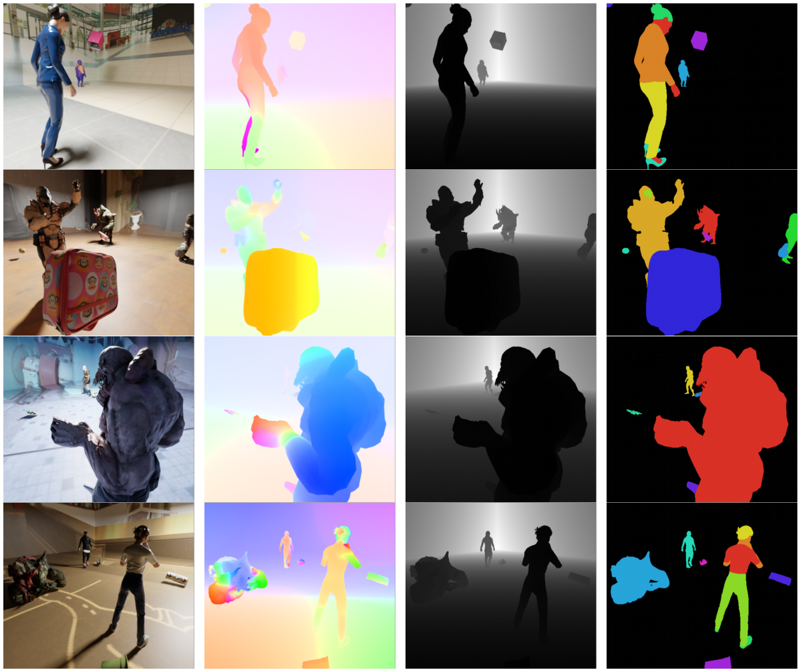

Data-driven modeling of dynamic scenes is limited by the lack of large-scale datasets that provide dense, reliable, and long-range supervision. Existing synthetic corpora are modest in scale and biased toward rigid or short-term motion, with sparse annotations that are insufficient for learning all-pairs correspondence at the sequence level. To address this, we develop PAIRender, a scalable Blender-based platform that generates photorealistic dynamic videos with per-pixel ground truth tailored to All-Pairs Tracking.

@inproceedings{wu2026pairformer,
title={Matching Every Pair to Track Every Point: PairFormer for All-Pairs Tracking and Video Trajectory Fields},
author={Guangyang Wu and Youran Ding and Xinyu Che and Benyuan Sun and Yi Yang and Xiaohong Liu},
booktitle={Proceedings of the IEEE/CVF Conference on Computer Vision and Pattern Recognition (CVPR)},
year={2026}
}